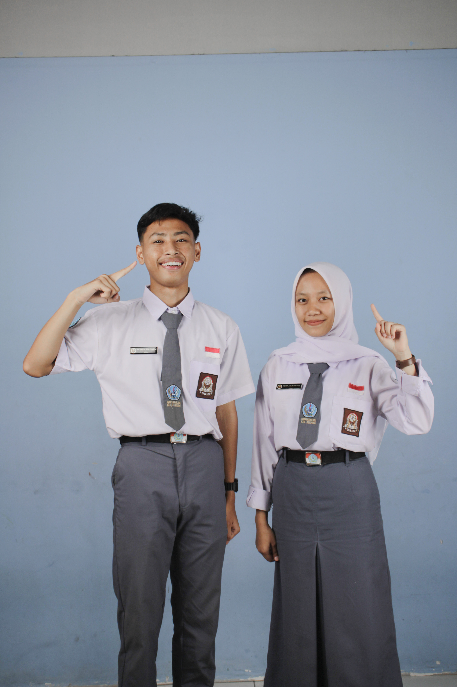

Mulki & Asyifa
"Apapun Makanannya, Minumannya Teh Botol Sosro"
Visi: Menjadikan OSIS sebagai organisasi berintegritas.
Misi:
- Meningkatkan partisipasi siswa dalam kegiatan OSIS.
- Mengembangkan program kerja yang inovatif dan berdampak.
- Menjalin kerjasama antar organisasi siswa.

Riva & Renata
"Macet di jalan panasnya nggak nahan? Gerah? Chill aja lah."
Visi: Mewujudkan OSIS yang terbuka.
Misi:
- Digitalisasi sistem kerja OSIS.
- Meningkatkan transparansi kegiatan dan anggaran.
- Mendorong kreativitas dan inovasi siswa.

Risma & Astri
"Bersama Rakyat Awasi Pemilu, Bersama Bawaslu Tegakkan Keadilan Pemilu"
Visi: Menjadikan OSIS sebagai wadah.
Misi:
- Mengadakan kegiatan sosial dan pengembangan diri.
- Menjalin komunikasi yang baik antara siswa dan guru.
- Meningkatkan penghargaan terhadap siswa berprestasi.